정보처리기사(구) (2007-03-04 기출문제)
1과목: 데이터 베이스
1. 트랜잭션의 특성 중 다음 설명에 해당하는 것은?
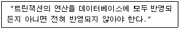
- Durability
- Isolation
- Consistency
- Atomicity
(정답률: 71%)

2. 데이터베이스의 정의가 일반적으로 함축하고 있는 의미로 거리가 먼 것은?
- 통합된 데이터(Integrated Data)
- 저장된 데이터(Stored Data)
- 한정된 데이터(Definite Data)
- 공용 데이터(Shared Data)
(정답률: 89%)
3. 데이터베이스 설계 순서로 옳은 것은?
- 요구조건 분석 → 물리적 설계 → 논리적 설계 → 개념적 설계 → 데이터베이스 구현
- 요구조건 분석 → 개념적 설계 → 논리적 설계 → 물리적 설계 → 데이터베이스 구현
- 요구조건 분석 → 논리적 설계 → 개념적 설계 → 물리적 설계 → 데이터베이스 구현
- 요구조건 분석 → 논리적 설계 → 물리적 설계 → 개념적 설계 → 데이터베이스 구현
(정답률: 88%)
4. 비선형 구조와 선형 구조가 옳게 짝지어진 것은?
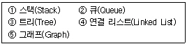
- 비선형 구조 : ①, ②, ⑤선형 구조 : ③, ④
- 비선형 구조 : ③, ⑤, 선형 구조 : ①, ②, ④
- 비선형 구조 : ①, ②, ③, 선형 구조 : ④, ⑤
- 비선형 구조 : ③, 선형 구조 : ①, ②, ④, ⑤
(정답률: 82%)
5. 스택 알고리즘에서 T가 스택 포인터이고, m이 스택의 길이일 때, 서브루틴 “AA”가 처리해야 하는 것은?
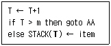
- 오버플로우 처리
- 언더플로우 처리
- 삭제 처리
- 삽입 처리
(정답률: 81%)
6. 중위 표기법(Infix)의 수식 (A+B)*C+(D+E)을 후위 표기법으로(Postfix)으로 올게 표기한 것은?
- AB+CDE*++
- AB+C*DE++
- +AB*C+DE+
- +*+ABC+DE
(정답률: 72%)
7. 다음 SQL 문에서 ( )의 내용으로 옳은 것은?
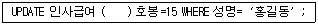
- SET
- FROM
- INTO
- IN
(정답률: 68%)
8. SQL에서 VIEW를 삭제할 때 사용하는 명령은?
- ERASE
- KILL
- DROP
- DELETE
(정답률: 81%)
9. 릴레이션의 특징으로 옳지 않은 것은?
- 한 릴레이션에 포함된 모든 튜플은 서로 다른 값을 갖는다.
- 하나의 릴레이션에서 튜플의 순서는 없다.
- 각 속성은 릴레이션 내에서 유일한 이름을 가질 필요가 없다.
- 모든 속성 값은 원자 값이다.
(정답률: 81%)
10. 정규화 과정에서 발생하는 이상(Anomaly)에 관한 설명으로 옳지 않은 것은?
- 이상은 속성들 간에 존재하는 여러 종류의 종속 관계를 하나의 릴레이션에 표현할 때 발생한다.
- 속성들 간의 종속 관계를 분석하여 여러 개의 릴레이션을 하나로 결합하여 이상을 해결한다.
- 삭제이상, 삽입이상, 갱신이상이 있다.
- 정규화는 이상을 제거하기 위해서 중복성 및 종속성을 배제시키는 방법으로 사용한다.
(정답률: 66%)
11. 다음의 관계 대수를 SQL로 옳게 나타낸 것은?
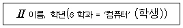
- SELECT 이름, 학년 FROM 학과 WHERE 학생 = ‘컴퓨터’ ;
- SELECT 학과, 컴퓨터 FROM 학생 WHERE 이름 = ‘학년’ ;
- SELECT 이름, 학과 FROM 학년 WHERE 학과 = ‘컴퓨터’ ;
- SELECT 이름, 학년 FROM 학생 WHERE 학과 = ‘컴퓨터’ ;
(정답률: 74%)
12. What is the degree of a relation?
- the number of occurrences n of its relation schema
- the number of tables n of its relation schema
- the number of attributes n of its relation schema
- the number of key n of its relation schema
(정답률: 75%)
13. 데이터베이스에 관한 사항으로 다음에서 설명하는 것은 무엇인가.?
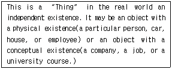
- Entity
- View
- Value
- Relationship
(정답률: 71%)
14. 병행제어의 로킹(Locking) 단위에 대한 설명으로 옳지 않은 것은?
- 로킹 단위가 작아지면 병행성 수준이 낮아진다.
- 데이터베이스, 파일, 레코드 등은 로킹 단위가 될 수 있다.
- 로킹 단위가 작아지면 로킹 오버헤드가 증가한다.
- 한꺼번에 로킹할 수 있는 단위를 로킹 단위라고 한다.
(정답률: 72%)
15. 뷰(VIEW)의 설명으로 옳지 않은 것은?
- 뷰는 하나 이상의 테이블로부터 유도되어 만들어지는 가상 테이블이다.
- 뷰 위에 또 다른 뷰를 정의할 수 있다.
- 뷰의 정의는 ALTER VIEW문을 이용하여 변경한다.
- 뷰가 정의된 기본테이블이 제거되면 뷰도 자동적으로 제거된다.
(정답률: 75%)
16. 제 3정규형에서 보이스코드 정규형(BCNF)으로 정규화하기 위한 작업은?
- 원자 값이 아닌 도메인을 분해
- 부분 함수 종속 제거
- 이행 함수 종속 제거
- 결정자가 후보 키가 아닌 함수 종속 제거
(정답률: 72%)
17. 데이터베이스 언어 중 다음 설명에 해당하는 것은?
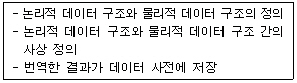
- DDL
- DML
- DCL
- DRL
(정답률: 75%)
18. 데이터베이스 설계시 물리적 설계 단계에서 수행하는 사항이 아닌 것은?
- 저장 레코드 양식 설계
- 레코드 집중의 분석 및 설계
- 접근 경로 설계
- 목표 DBMS에 맞는 스키마 설계
(정답률: 70%)
19. 개체-관계 모델의 E-R 다이어그램에서 사용되는 기호와 그 의미의 연결이 옳지 않은 것은?
- 타원(원형) - 속성
- 선(링크) - 연결
- 마름모(다이아몬드) - 관계 타입
- 삼각형 - 개체 타입
(정답률: 85%)
20. 스택(Stack)에 대한 설명으로 옳은 것은?
- 인터럽트 처리, 서브루틴 호출 작업 등에 응용된다.
- FIFO 방식으로 처리된다.
- 순서 리스트의 뒤(Rear)에서 노드가 삽입되며, 앞(Front)에서 노드가 제거된다.
- 선형 리스트의 양쪽 끝에서 삽입과 삭제가 모두 가능한 자료 구조이다.
(정답률: 62%)
2과목: 전자 계산기 구조
21. 인터럽트를 발생하는 모든 장치들을 인터럽트의 우선순위에 따라 직렬로 연결함으로써 이루어지는 우선순위 인터럽트 처리방법은?
- Handshaking
- Daisy-Chain
- DMA
- Polling
(정답률: 62%)
22. 인터프리터(Interpreter)를 사용하는 언어는?
- BASIC
- FORTRAN
- PASCAL
- Machine Code
(정답률: 59%)
23. 다음 Interrupt 발생 원인이 아닌 것은?
- 정전
- Operator의 의도적인 조작
- 임의의 부프로그램에 대한 호출
- 기억공간 내 허용되지 않는 곳에의 접근 시도
(정답률: 60%)
24. 중앙처리장치의 기억 모듈에 중복적인 데이터 접근을 방지하기 위해서 연속된 데이터 또는 명령어들을 기억장치모듈에 순차적으로 번갈아 가면서 처리하는 방식은?
- 복수 모듈
- 인터리빙
- 멀티플렉서
- 셀렉터
(정답률: 69%)
25. 미소의 콘덴서에 전하를 충전하는 형태의 원리를 이용하는 메모리로, 재충전(Refresh)이 필요한 메모리는?
- SRAM
- DRAM
- PROM
- EPROM
(정답률: 63%)
26. 다음 중 랜덤(Random) 처리가 되지않는 기억장치는?
- 자기 드럼
- 자기 디스크
- 자기 테이프
- 자기 코어
(정답률: 70%)
27. 다음 중 2의 보수(2’s Complement) 가산 회로로서 정수 곱셈을 이행할 경우 필요 없는 것은?
- Shift
- Add
- Complement
- Normalize
(정답률: 54%)
28. 데이터 처리 명령어에 해당되지 않는 것은?
- 전송 명령어
- 로테이트 명령어
- 논리 명령어
- 산술 명령어
(정답률: 43%)
29. 부동 소수점 수(Floating Point Number)에서 음수를 나타내는 방법을 가장 잘 설명한 것은?
- 가수의 부호가 (+)이면 1, (-)이면 0으로 나타낸다.
- 지수는 부호에 관계없이 bias 값에 더한다.
- 지수는 부호 (-)이면 2의 보수로 나타낸다.
- 지수는 부호 (-)이면 1의 보수로 나타낸다.
(정답률: 38%)
30. 컴퓨터의 제어 장치에 일반적으로 포함되지 않는 것은?
- 해독기
- 순서기
- 주기억장치
- 주소 처리기
(정답률: 53%)
31. 데이터 처리 명령어 중 SHL은 누산기의 내용을 좌측으로 1bit 이동하는 명령어이다. 이와 같은 명령어의 주소지정방식은?
- 직접 주소지정방식
- 간접 주소지정방식
- 묵시적 주소지정방식
- 레지스터 주소지정방식
(정답률: 36%)
32. 다음 중 캐시(Cache) 기억장치에 대한 설명으로 가장 옳은 것은?
- 중앙처리장치와 주기억장치의 정보교환을 위해 임시 보관하는 장치이다.
- 중앙처리장치의 속도와 주기억장치의 속도를 가능한 같도록 하기 위한 장치이다.
- 캐시와 주기억장치 사이에 정보 교환을 위하여 임시 저장하는 장치이다.
- 캐시와 주기억장치의 속도를 같도록 하기 위한 장치이다.
(정답률: 67%)
33. CPU의 메이저 상태(Major State)로 볼 수 없는 것은?
- Fetch
- Indirect
- Execute
- Direct
(정답률: 58%)
34. 사용자가 한번만 내용을 기입할 수 있으나, 지울 수 없는 것은?
- RAM
- PROM
- EPROM
- EEPROM
(정답률: 61%)
35. 마이크로 사이클에 대한 설명으로 옳지 않은 것은?
- 마이크로 오퍼레이션 수행에 필요한 시간을 마이크로 사이클 타임이라 한다.
- 마이크로 오퍼레이션 중에서 수행 시간이 가장 긴 것을 정의한 방식이 동기 고정식이다.
- 마이크로 오퍼레이션에 따라서 수행 시간을 다르게 하는 것을 동기 가변식이라 한다.
- 모든 마이크로 오퍼레이션들의 수행 시간이 유사한 경우에 유리한 방식은 동기 가변식이다.
(정답률: 59%)
36. 다음 Parallel Process 중 Pipeline Process와 가장 관계가 깊은 것은?
- SISD(Single Instruction Single Data)
- MISD(Multi Instruction Single Data)
- SIMD(Single Instruction Multi Data)
- MIMD(Multi Instruction Multi Data)
(정답률: 39%)
37. 인터럽트 작동 순서가 올바른 것은?
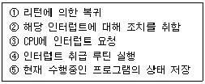
- ③→⑤→④→②→①
- ④→③→⑤→②→①
- ⑤→②→③→①→④
- ①→③→④→⑤→③
(정답률: 81%)
38. 다음 중 DMA에 대한 설명으로 옳지 않은 것은?
- DMA는 Direct Memory Access의 약자이다.
- DMA는 기억장치와 주변장치 사이의 직접적인 데이터 전송을 제공한다.
- DMA는 블록으로 대용량의 데이터를 전송할 수 있다.
- DMA는 입·출력 전송에 따른 CPU의 부하를 증가시킬 수 있다.
(정답률: 69%)
39. 명령문의 구성 형태 중 하나의 오퍼랜드가 누산기에 포함된 명령어 형식은?
- 0-주소 명령어
- 1-주소 명령어
- 2-주소 명령어
- 3-주소 명령어
(정답률: 70%)
40. CAM(Content Addressable Memory)의 특징으로 가장 옳은 것은?
- 값이 싸다.
- 구조 및 동작이 간단하다.
- 명령어를 순서대로 기억시킨다.
- 저장된 내용의 일부를 이용하여 정보의 위치를 검색한다.
(정답률: 70%)
3과목: 운영체제
41. 유닉스에서 파일 내용을 화면에 표시하는 명령과 파일의 보호 모드를 설정하여 파일의 사용 허가를 지정하는 명령을 순서적으로 옳게 나열한 것은?
- cp, rm
- open, chown
- cat, chmod
- type, mkdir
(정답률: 79%)
42. SSTF 방식을 사용할 경우 현재 헤드가 53에 있다고 가정하면, 디스크 대기 큐에 다음과 같은 순서(왼쪽부터 먼저 도착한 순서임)의 액세스 요청이 대기 중일 때 가장 먼저 실행되는 것은?
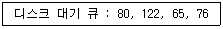
- 80
- 122
- 65
- 76
(정답률: 74%)
43. 프로세스의 정의로 거리가 먼 것은?
- 프로시저가 활동 중인 것
- 동기적 행위를 일으키는 주체
- PCB를 가진 프로그램
- 실행 중인 프로그램
(정답률: 68%)
44. 파일 구성 방식 중 ISAM(Indexed Sequential Access Merhod)의 물리적인 색인 구성은 디스크의 물리적 특성에 따라 색인(Index)을 구성하는데, 다음 중 3단계 색인에 해당되지 않는 것은?
- 실린더 색인(Cylinder Index)
- 트랙 색인(Track Index)
- 마스터 색인(Master Index)
- 볼륨 색인(Volume Index)
(정답률: 63%)
45. 유닉스의 I-node에 포함되는 내용이 아닌 것은?
- 파일이 최초로 수정된 시간
- 파일 소유자의 사용자 식별
- 파일의 크기
- 파일의 링크 수
(정답률: 74%)
46. 유닉스에서 기존 파일 시스템에 새로운 파일 시스템을 서브 디렉토리에 연결할 때 사용하는 명령은?
- mount
- mkfs
- fsck
- mknod
(정답률: 61%)
47. 분산 처리 시스템의 설명으로 적합하지 않은 것은?
- 신뢰도 향상
- 자원 공유
- 연산 속도 향상
- 보안성 향상
(정답률: 76%)
48. 분산 운영체제의 구조 중 다음 설명에 해당하는 것은?
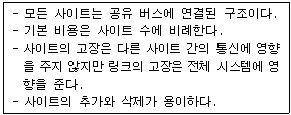
- Multi-Access Bus Connection
- Hierarchy Connection
- Star Connection
- Ring Connection
(정답률: 72%)
49. 파일 보호 기법 중 다음 설명에 해당하는 것은?
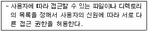
- Cryptography
- Password
- Naming
- Access Control
(정답률: 72%)
50. 매크로 프로세서가 수행해야 하는 기본적인 기능에 해당하지 않는 것은?
- 매크로 정의 확장
- 매크로 호출 인식
- 매크로 정의 인식
- 매크로 정의 저장
(정답률: 64%)
51. 메모리 관리 기법 중 Worst Fit 방법을 사용할 경우 9K가 요구되는 프로그램 실행을 위해 어느 부분이 할당되는가?
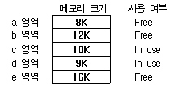
- a 영역
- b 영역
- c 영역과 d 영역
- e 영역
(정답률: 74%)
52. 다중 프로그래밍 작성의 환경에서 어떤 프로그램의 실행을 중단하고 다른 프로그램의 실행을 재개할 때, 그 프로그램의 재개에 필요한 환경을 다시 설정하는 것을 의미하며, 운영체제에서 Overhead의 큰 요인 중 하나로 작용하는 것은?
- Context Switching
- Monitor
- Semaphore
- Dispatching
(정답률: 56%)
53. 파일 시스템에 대한 설명으로 옳지 않은 것은?
- 고급 언어에 대한 번역 기능을 제공한다.
- 사용자가 파일을 생성, 수정, 제거할 수 있도록 한다.
- 파일 공유를 위해서 여러 종류의 접근 제어 기법을 제공한다.
- 불의의 사태에 대비한 예비(Backup)와 복구(Recovery) 능력을 갖추어야 한다.
(정답률: 73%)
54. 선점(Preemptive) 기법의 스케줄링에 해당하는 것은?
- FIFO
- SJF
- HRN
- RR
(정답률: 47%)
55. 운영체제의 설명으로 옳지 않은 것은?
- 운영체제는 컴퓨터 사용자와 컴퓨터 하드웨어간의 인터페이스로서 동작하는 일종의 하드웨어 장치다.
- 운영체제는 컴퓨터를 편리하게 사용하고 컴퓨터 하드웨어를 효율적으로 사용할 수 있도록 한다.
- 운영체제의 성능 평가 요소에는 처리 능력, 반환 시간, 사용 가능도, 신뢰도 등이 있다.
- 운영체제는 프로세서, 메모리, 주변장치, 파일 등을 관리한다.
(정답률: 76%)
56. 파일의 구성 방식 중 순차 파일에 대한 설명으로 옳지 않은 것은?
- 부가적인 정보를 보관하지 않으므로 불필요한 공간 낭비가 없다.
- 파일 구성이 용이하다.
- 대화식 처리보다 일괄 처리에 적합한 구조이다.
- 임의의 특정 레코드를 검색하는 효율이 높다.
(정답률: 72%)
57. 실행 중인 프로세스가 일정 시간 동안 자주 참조하는 페이지의 집합을 무엇이라고 하는가?
- Working Set
- Locality
- Thrashing
- Prepaging
(정답률: 66%)
58. SJF 방법의 단점을 보완하여 개발한 것으로, 프로그램의 처리 순서는 그 실행(서비스) 시간의 길이뿐만 아니라 대기 시간에 따라 결정되는 스케줄링 방식은?
- SRT
- HRN
- MFQ
- RR
(정답률: 63%)
59. LRU 교체 기법에서 페이지 프레임이 3일 경우 페이지 호출 순서가 3인 곳(화살표 부분)의 빈칸을 위에서부터 아래쪽으로 옳게 나열한 것은?
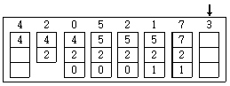
- 3, 2, 1
- 7, 3, 1
- 7, 2, 3
- 5, 2, 3
(정답률: 70%)
60. 다음 중 공간 구역성(Spatial Locality)과 밀접한 관계가 있는 것은?
- 스택(Stack)
- 순환(Looping)
- 배열 순례(Array Traversal)
- 부프로그램(Subprogram)
(정답률: 63%)
4과목: 소프트웨어 공학
61. 소프트웨어 재사용의 이점으로 볼 수 없는 것은?
- 개발 비용을 감소시킨다.
- 프로그램 언어가 종속적이다.
- 소프트웨어 품질을 향상 시킨다.
- 프로그램 생성 지식을 공유하게 된다.
(정답률: 68%)
62. 구조적 분석도구인 자료흐름도의 구성 요소가 아닌 것은?
- Process
- Data Store
- Definition
- Terminator
(정답률: 54%)
63. 사용자의 요구사항 분석 작업이 어려운 이유와 거리가 먼 것은?
- 개발자와 사용자 간의 지식이나 표현의 차이가 커서 상호 이해가 쉽지 않다.
- 사용자의 요구는 예외가 거의 없어 열거와 구조화가 어렵지 않다.
- 사용자의 요구사항이 모호하고 부정확하며, 불완전하다.
- 개발하고자 하는 시스템 자체가 복잡하다.
(정답률: 65%)
64. 소프트웨어 설계의 품질을 평가하는 척도로 결합도와 응집력이 사용된다. 다음 중 가장 우수한 설계 품질은?
- 모듈간의 결합도는 높고 모듈내부의 응집력은 높다.
- 모듈간의 결합도는 높고 모듈내부의 응집력은 낮다.
- 모듈간의 결합도는 낮고 모듈내부의 응집력은 높다.
- 모듈간의 결합도는 낮고 모듈내부의 응집력은 낮다.
(정답률: 74%)
65. Rumbaugh의 객체 모델링 기법(OMT)에서 사용하는 세가지 모델링이 아닌 것은?
- 객체 모델링(Object Modeling)
- 정적 모델링(Static Modeling)
- 동적 모델링(Dynamic Modeling)
- 기능 모델링(Functional Modeling)
(정답률: 73%)
66. 다음 중 소프트웨어 개발시 위험요소로 가장 거리가 먼 것은?
- 인력부족
- 유지보수
- 예산부족
- 요구변경
(정답률: 55%)
67. 나씨-슈나이더만(Nassi-Schneiderman) 도표는 구조적 프로그램을 표현하기 위해 고안되었다. 이 방법에서 알고리즘의 제어구조는 3가지로 충분히 표현될 수 있는데, 이에 해당하지 않는 것은?
- 선택, 다중선택(if ∼ then ∼ else, case)
- 반복(repeat ∼ until, while, for)
- 분기(goto, return)
- 순차(sequential)
(정답률: 55%)
68. 위험분석에 대한 설명으로 가장 거리가 먼 것은?
- 위험분석은 프로젝트에 내재한 위험 요소를 인식하고 그 영향을 분석하는 활동이다.
- 가능한 모든 위험 요소와 영향을 분석하여 의사 결정에 반영한다.
- 위험요소에 대해 효과적이지 못한 관리는 프로젝트 실패의 결과도 가져올 수 있다.
- 소프트웨어 사용자에 대한 위험성도 심각하게 고려한다.
(정답률: 73%)
69. CASE(Computer Aided Software Engineering)에 대한 설명으로 옳지 않은 것은?
- 프로그램의 구현과 유지보수 작업만을 중심으로 소프트웨어생산성 문제를 해결한다.
- 소프트웨어 생명 주기의 전체 단계를 연결해 주고 자동화해 주는 통합된 도구를 제공한다.
- 개발 과정의 속도를 향상 시킨다.
- 소프트웨어 부품의 재사용을 가능하게 한다.
(정답률: 57%)
70. 다음 설명에 해당하는 소프트웨어 테스트 기법은?
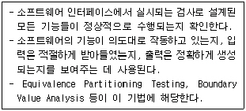
- 화이트박스 테스트
- 블랙박스 테스트
- 레드박스 테스트
- 블루박스 테스트
(정답률: 66%)
71. 소프트웨어 부품에 적용되는 품질로서, 과학 계산용 라이브러리와 같이 이미 만들어진 프로그램을 사용하는 것을 의미하는 것은?
- 신뢰성
- 재사용성
- 확장성
- 유지보수성
(정답률: 80%)
72. 재사용 라이브러리가 가져야 할 속성이 아닌 것은?
- 확장성
- 비표준화된 요소 표현 형식
- 재사용 요소들의 생성, 편집 등을 허용하는 연산
- 편리한 접근, 탐색, 버전관리, 제어 변경
(정답률: 72%)
73. 다음은 소프트웨어의 특성에 대한 설명이다. 각 특성의 정의를 올바르게 짝지은 것은?
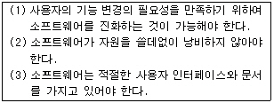
- (1) 효율성, (2) 유지보수성, (3) 사용용이성
- (1) 사용용이성, (2) 유지보수성, (3) 효율성
- (1) 유지보수성, (2) 효율성, (3) 사용용이성
- (1) 효율성, (2) 사용용이성, (3) 유지보수성
(정답률: 72%)
74. CPM(Critical Path Method)에 대한 설명으로 올바르지 않은 것은?
- CPM 네트워크는 노드와 간선으로 구성된 네트워크이다.
- CPM 네트워크는 프로젝트 완성에 필요한 작업을 나열하고,작업에 필요한 소요기간을 예측하는데 사용된다.
- CPM 네트워크에서 작업의 선후 관계는 파악되지 않아도 무관하다.
- CPM 네트워크를 효과적으로 사용하기 위해서는 필요한 시간을 정확히 예측해야 한다.
(정답률: 68%)
75. 객체지향에서 캡슐화에 대한 설명으로 잘못된 것은?
- 재사용이 용이하다.
- 인터페이스를 단순화시킬 수 있다.
- 응집도가 향상된다.
- 결합도가 높아진다.
(정답률: 67%)
76. 소프트웨어의 문서(Document) 표준이 되었을 때, 개발자가 얻는 이득으로 가장 거리가 먼 것은?
- 시스템 개발을 위한 분석 설계가 용이하다.
- 프로그램 유지보수가 용이하다.
- 프로그램의 확장성이 있다.
- 프로그램 개발 인력이 감소된다.
(정답률: 71%)
77. 소프트웨어 프로젝트를 효과적으로 관리하기 위해서는 3P에 초점을 맞추어야 한다. 3P에 직접 해당하지 않는 것은?
- People
- Program
- Problem
- Process
(정답률: 70%)
78. 기존에 있던 소프트웨어를 파기하지 않고 변경된 사용자의 요구사항이나 수정된 환경으로 기존 소프트웨어를 수정 보완하여 재구축하자는 개념은?
- 소프트웨어 재공학(Reengineering)
- 소프트웨어 재판매(Resale)
- 소프트웨어 재정의(Redefine)
- 소프트웨어 재조정(Readjust)
(정답률: 81%)
79. 소프트웨어 생명 주기 모형 중 다음 설명에 해당하는 것은?
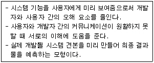
- 폭포수 모형
- 나선형 모형
- 프로토타입 모형
- 4GT 모형
(정답률: 81%)
80. 객체지향 개념에서 객체가 메시지를 받아 실행해야 할 객체의 구체적인 연산을 정의한 것은?
- 클래스
- 메시지
- 인스턴스
- 메소드
(정답률: 69%)
5과목: 데이터 통신
81. 다음 중 시분할 다중화 방식에 대한 설명으로 틀린 것은?
- 하나의 회선을 다수의 짧은 시간 간격으로 분할하여 다중화한다.
- 전송로의 데이터 전송시간을 일정한 타임 슬롯으로 나누어 각 부채널로 분배하여 비동기형만 사용하고 있다.
- 전송은 디지털로 이루어 진다.
- 통계적 시분할 다중화의 경우에는 동시에 데이터를 보낼 수 있는 터미널의 수가 동적으로 변할 수 있다.
(정답률: 57%)
82. 회선을 제어하기 위한 제어 문자 중 실제 전송할 데이터 집합의 시작임을 의미하는 통신 제어문자는?
- SOH
- STX
- SYN
- DLE
(정답률: 66%)
83. OSI 참조 모델의 계층에서 통신 시스템간의 경로 배정, 주소설정 등의 기능을 수행하는 것은?
- 물리 계층
- 데이터링크 계층
- 네트워크 계층
- 전송 계층
(정답률: 47%)
84. 지능 다중화기에 대한 설명으로 옳지 않은 것은?
- 비동기식 시분할 다중화 장비이다.
- 통계적 다중화기라고 한다.
- 가격이 저렴하고 접속에 소요되는 시간이 단축된다.
- 기억장치, 복잡한 주소제어 회로 등이 필요하다.
(정답률: 65%)
85. X.25 프로토콜에 대한 설명 중 옳지 않은 것은?
- 비연결형 네트워크 프로토콜이다.
- 사용자 장치(DTE)와 패킷 네트워크 노드(DCE) 간의 데이터 교환절차를 정의한다.
- 물리계층, 링크계층, 패킷계층으로 구성된다.
- 흐름 및 오류 제어기능을 제공한다.
(정답률: 43%)
86. 다음 중 비트 방식의 데이터링크 프로토콜이 아닌 것은?
- HDLC
- SDLC
- LAPB
- BSC
(정답률: 45%)
87. 고속 이더넷에 대한 설명으로 옳은 것은?
- 전송속도는 1Gbps 이다.
- 표준안은 IEEE 802.8이다.
- 구축비용이 FDDI보다 많이 소요된다.
- 기존의 10Mbps용 이더넷과 호환성을 유지할 수 있다.
(정답률: 48%)
88. 통신사업자의 회선을 임차하여 단순한 전송기능 이상의 부가가치를 부여한 음성 등 복합적인 서비스를 제공하는 정보통신망은?
- CATV
- LAN
- ISDN
- VAN
(정답률: 66%)
89. 패킷교환방식 중 가상회선방식의 특징이 아닌 것은?
- 전송 중에는 동일한 경로를 갖는다.
- 연결 설정 후에는 물리적인 회선을 공유하지 못한다.
- 별도의 호(call) 설정 과정이 있다.
- 프레임 저장 기능이 있다.
(정답률: 54%)
90. 다음 중 LAN의 매체 액세스제어(MAC) 프로토콜에 속하지 않는 것은?
- CSMA/CD
- 이중 링
- 토큰 링
- 토큰 버스
(정답률: 57%)
91. 무선 LAN의 장점으로 볼 수 없는 것은?
- 효율성
- 확장성
- 이동성
- 보안성
(정답률: 77%)
92. 다음 데이터 교환방식 중 고정 대역폭(Band Width)을 사용하는 것은?
- 회선 교환
- 메시지 교환
- 데이터그램 교환
- 가상회선 교환
(정답률: 57%)
93. 통신속도가 2400[baud]이고, 4상 위상변조를 하면 데이터의 전송속도는 얼마인가?
- 2400[baud]
- 4800[baud]
- 9600[baud]
- 19200[baud]
(정답률: 49%)
94. 송신측에서 1101의 데이터를 전송하였으나, 수신측이 받은 데이터는 1011로 나타났다. 이 때 두 데이터간의 해밍거리를 올바르게 계산한 것은?
- 1
- 2
- 3
- 4
(정답률: 64%)
95. DTE에서 출력되는 디지털 신호를 디지털 회선망에 적합한 신호형식으로 변환하는 장치는?
- MODEM
- CCU
- DCS
- DSU
(정답률: 54%)
96. 데이터 전달을 위한 회선 제어 절차의 단계를 순서대로 나열한 것은?
- 데이터 링크 확립→회선 연결→데이터 전송→데이터 링크 해제→회선 절단
- 회선 연결→데이터 링크 확립→데이터 전송→데이터 링크 해제→회선 절단
- 데이터 링크 확립→회선 연결→데이터 전송→회선 절단→데이터 링크 해제
- 회선 연결→데이터 링크 확립→데이터 전송→회선 절단→데이터 링크 해제
(정답률: 72%)
97. OSI 참조 모델의 데이터링크 계층에 대한 설명으로 틀린 것은?
- 물리적 계층의 신뢰도를 높여 주고 링크의 확립 및 유지할 수 있는 수단을 제공한다.
- 에러제어, 흐름제어 등의 기능을 수행한다.
- 종단 시스템간에 end to end 통신을 지원한다.
- 대표적 프로토콜로는 HDLC, BSC 등이 있다.
(정답률: 51%)
98. 패킷을 목적지까지 전달하기 위해 사용되는 라우팅 프로토콜은?
- ICMP
- RIP
- ARP
- HTTP
(정답률: 53%)
99. TCP/IP 프로토콜에 관한 설명으로 잘못된 것은?
- TCP는 OSI 참조 모델의 네트워크 계층에 대응되고, IP는 트랜스포트 계층에 대응된다.
- OSI 표준 프로토콜과 가까운 망 구조를 가지고 있다.
- TCP 프로토콜과 IP 프로토콜의 결합적 의미로서 TCP가 IP보다 상위층에 존재한다.
- 네트워크 환경에 따라 여러 개의 프로토콜을 허용한다.
(정답률: 46%)
100. 다음 중 HDLC 정보프레임의 용도 및 기능으로 가장 적합한 것은?
- 사용자 데이터 전달
- 흐름 제어
- 에러 제어
- 링크 제어
(정답률: 48%)